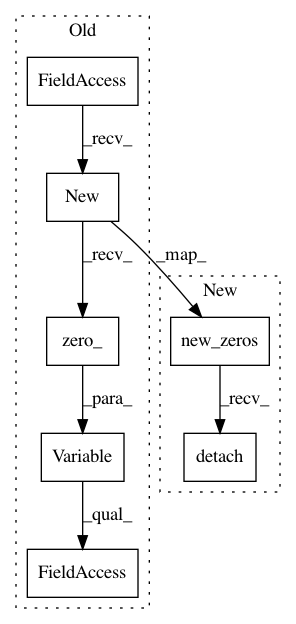

68f970aca1f95cddbc1c5fc4e4c7e6b6bffb2293,models/AttModel.py,AttModel,_forward,#AttModel#Any#Any#Any#Any#,98
Before Change
state = self.init_hidden(batch_size)
// outputs = []
outputs = Variable(fc_feats.data.new(batch_size, seq.size(1) - 1, self.vocab_size+1).zero_())
fc_feats, att_feats, p_att_feats = self._prepare_feature(fc_feats, att_feats, att_masks)
for i in range(seq.size(1) - 1):
if self.training and i >= 1 and self.ss_prob > 0.0: // otherwiste no need to sample
sample_prob = fc_feats.data.new(batch_size).uniform_(0, 1)
sample_mask = sample_prob < self.ss_prob
if sample_mask.sum() == 0:
it = seq[:, i].clone()
else:
sample_ind = sample_mask.nonzero().view(-1)
it = seq[:, i].data.clone()
//prob_prev = torch.exp(outputs[-1].data.index_select(0, sample_ind)) // fetch prev distribution: shape Nx(M+1)
//it.index_copy_(0, sample_ind, torch.multinomial(prob_prev, 1).view(-1))
// prob_prev = torch.exp(outputs[-1].data) // fetch prev distribution: shape Nx(M+1)
prob_prev = torch.exp(outputs[:, i-1].data) // fetch prev distribution: shape Nx(M+1)
it.index_copy_(0, sample_ind, torch.multinomial(prob_prev, 1).view(-1).index_select(0, sample_ind))
it = Variable(it, requires_grad=False)
else:
After Change
state = self.init_hidden(batch_size)
// outputs = []
outputs = fc_feats.new_zeros(batch_size, seq.size(1) - 1, self.vocab_size+1)
fc_feats, att_feats, p_att_feats = self._prepare_feature(fc_feats, att_feats, att_masks)
for i in range(seq.size(1) - 1):
if self.training and i >= 1 and self.ss_prob > 0.0: // otherwiste no need to sample
sample_prob = fc_feats.new(batch_size).uniform_(0, 1)
sample_mask = sample_prob < self.ss_prob
if sample_mask.sum() == 0:
it = seq[:, i].clone()
else:
sample_ind = sample_mask.nonzero().view(-1)
it = seq[:, i].data.clone()
//prob_prev = torch.exp(outputs[-1].data.index_select(0, sample_ind)) // fetch prev distribution: shape Nx(M+1)
//it.index_copy_(0, sample_ind, torch.multinomial(prob_prev, 1).view(-1))
// prob_prev = torch.exp(outputs[-1].data) // fetch prev distribution: shape Nx(M+1)
prob_prev = torch.exp(outputs[:, i-1].detach()) // fetch prev distribution: shape Nx(M+1)
it.index_copy_(0, sample_ind, torch.multinomial(prob_prev, 1).view(-1).index_select(0, sample_ind))
else:
it = seq[:, i].clone()
In pattern: SUPERPATTERN
Frequency: 3
Non-data size: 7
Instances
Project Name: ruotianluo/self-critical.pytorch
Commit Name: 68f970aca1f95cddbc1c5fc4e4c7e6b6bffb2293
Time: 2018-04-26
Author: rluo@ttic.edu
File Name: models/AttModel.py
Class Name: AttModel
Method Name: _forward
Project Name: Kaixhin/Rainbow
Commit Name: d4255c9c4d04cf7f09881b272535cfdc155957a7
Time: 2018-04-28
Author: design@kaixhin.com
File Name: agent.py
Class Name: Agent
Method Name: learn